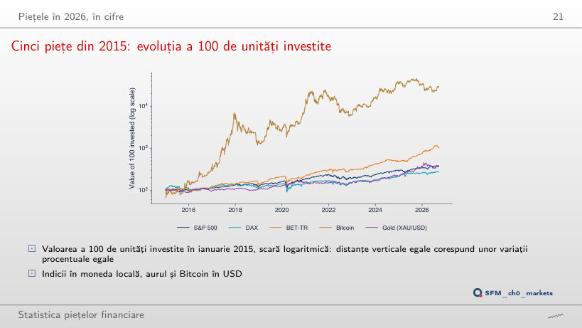
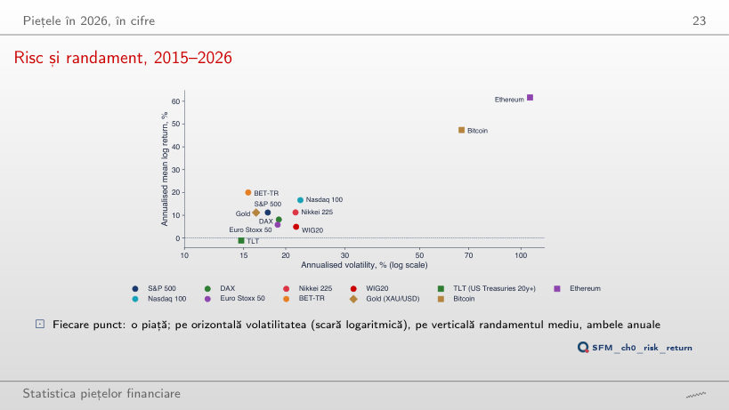
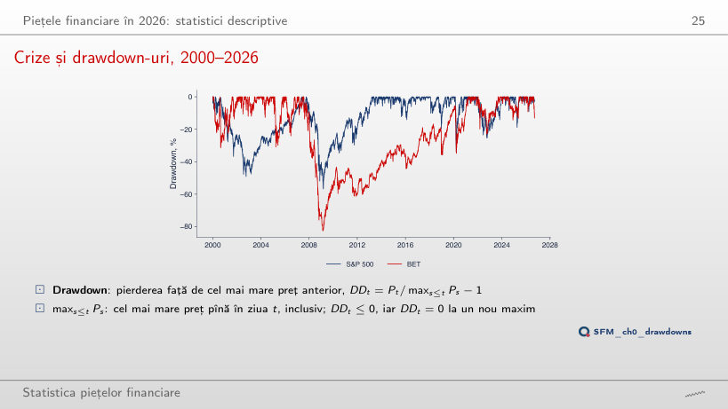
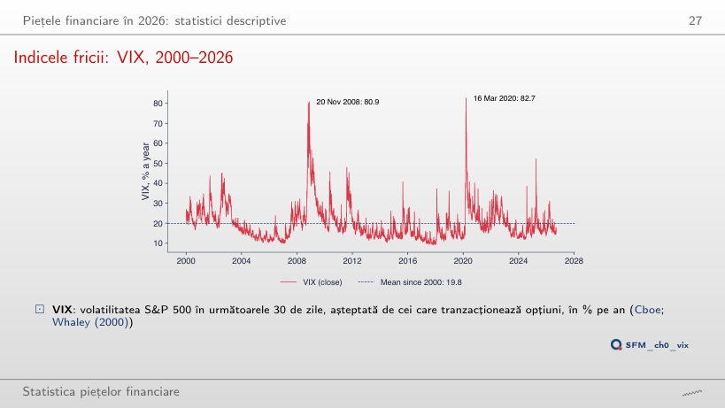
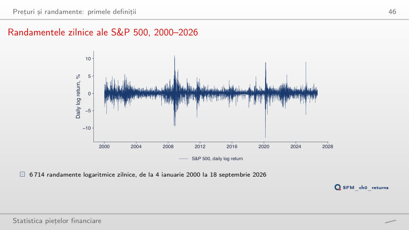
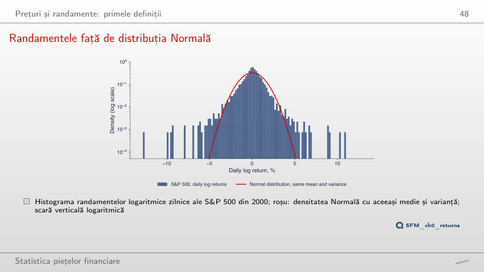

În stînga este slide-ul din curs, în dreapta aceeași figură, calculată în browser din aceleași date. Butonul ▶ modifică parametrul pas cu pas. Abrevieri: DAX (Deutscher Aktienindex, indicele bursei din Frankfurt), BET (Bucharest Exchange Trading, indicele de referință al Bursei de Valori București), BET-TR (BET total return, cu dividendele reinvestite), WIG20 (indicele celor mai mari 20 de firme de la bursa din Varșovia), TLT (un ETF de titluri de stat americane cu scadența peste 20 de ani), ETF (exchange-traded fund, fond tranzacționat la bursă), VIX (Cboe Volatility Index, volatilitatea S&P 500 așteptată de piața de opțiuni), SE (eroarea standard), GARCH (generalised autoregressive conditional heteroskedasticity).
Piețele financiare în 2026: statistici descriptive · Prețuri și randamente: primele definiții
Piețele financiare în 2026: statistici descriptive
Cinci piețe din 2015: evoluția a 100 de unități investite

Răspuns
Bitcoin: −9,0% pe an (100 de unități devin 86), deși în fereastra din 2015 avea cel mai mare randament, 47,4%; în fereastra din 2025 conduce BET-TR, cu 44,0%. Pe ferestre scurte, clasamentul depinde aproape în întregime de data de început: un randament mediu estimat pe mai puțin de doi ani este foarte imprecis.
Risc și randament, 2015–2026

Răspuns
Sub zero: −7,8% pe an, cu o volatilitate de 68,9%, sub S&P 500 (9,9%) și BET-TR (26,2%). Graficul nu demonstrează că riscul mai mare aduce un randament mai mare: punctele sînt medii ale unui singur eșantion. Eroarea standard a randamentului mediu anual pe Y ani este σ/√Y; pentru S&P 500 din 2015, 17,7/√11,7 = 5,2 puncte procentuale, pentru Bitcoin 19,5 puncte.
Crize și drawdown-uri, 2000–2026

Răspuns
În 2021, pe 16 martie, după mai mult de 13 ani; S&P 500 revenise la vîrful din 9 octombrie 2007 pe 28 martie 2013. De la minimul din 25 februarie 2009 (−82,5%), BET avea nevoie de un cîștig de 473%, adică de o creștere de 5,7 ori; S&P 500, după −56,8%, de un cîștig de 131%. După o pierdere x, revenirea cere un cîștig x/(1 − x).
Indicele fricii: VIX, 2000–2026

Răspuns
Probabilitatea empirică este 88,2%, deși doar 9,3% dintre zilele din 2000 au închideri peste 30. Zilele cu volatilitate mare vin în episoade (74 de episoade peste 30, cel mai lung de 170 de zile de tranzacționare): este fenomenul de volatility clustering, modelat cu GARCH în Capitolul 9.
Prețuri și randamente: primele definiții
Randamentele zilnice ale S&P 500, 2000–2026

Răspuns
Scade la mai puțin de jumătate: de la 97,4% (7 aprilie 2020) la 45,6% (16 iulie 2009). O fereastră lungă amestecă zilele de criză cu zile calme și netezește vîrfurile. Pentru orice fereastră, între 6,0% și 6,7% dintre zile ies din banda ±2 abateri standard mobile, față de 4,6% la distribuția Normală.
Randamentele față de distribuția Normală

Răspuns
Crește foarte mult: la 4 abateri standard, 46 de zile față de 0,43 așteptate (de 108 ori mai multe); la 6 abateri standard, 12 zile față de 0,000013 (de circa 906 000 de ori mai multe). Coada distribuției Normale scade mult mai repede decît coada randamentelor, de aceea riscul calculat cu distribuția Normală este subestimat în cozi (Capitolele 2, 5 și 10).
Datele cursului din data/market (sursa EODHD), închideri zilnice pînă la 18 septembrie 2026, fiecare serie pe propriul calendar: cele cinci piețe și cele unsprezece piețe ale graficului risc–randament din ianuarie 2015, S&P 500, BET și VIX din ianuarie 2000. Browserul recalculează creșterea a 100 de unități, randamentele și volatilitățile anualizate, drawdown-urile, statisticile VIX, volatilitatea mobilă, histograma și numărul de zile din cozi. Alte date de început ale ferestrei, alte praguri și alte ferestre ale volatilității mobile sînt rulări suplimentare ale aceluiași calcul.